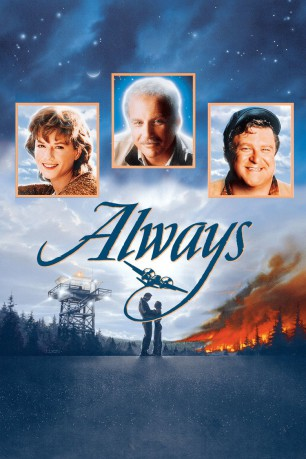

#7968 Always - Der Feuerengel von Montana
Alternativ: Always
 
 IMDB-Wertung: 6.4 / 10
IMDB-Wertung: 6.4 / 10  Metascore: 0
Metascore: 0 
Bei seinem letzten Einsatz als Löschflugzeugpilot verunglückt Pete Sandich tödlich. Doch sein Geist lebt weiter und beschützt den jungen Piloten Ted Baker, der sich in seine trauernde Freundin Dorinda verliebt.
Jahr: 1989
Dauer: 122 Minuten
FSK: 12
Land: USA Studio: United ArtistsTonspuren:
Untertitel: Deutsch,
Auflösung: 1080p (1920x1040) Größe: 10065 MB
Genre: Fantasy, Liebe
Regisseur:  Steven Spielberg
Steven Spielberg
Drehbuch: Simon Aboud
Soundtrack: John Williams
Darsteller:
 Richard Dreyfuss als Pete Sandich
Richard Dreyfuss als Pete Sandich Holly Hunter als Dorinda Durston
Holly Hunter als Dorinda Durston- Brad Johnson als Ted Baker
 John Goodman als Al Yackey
John Goodman als Al Yackey Audrey Hepburn als Hap
Audrey Hepburn als Hap Roberts Blossom als Dave
Roberts Blossom als Dave Keith David als Powerhouse
Keith David als Powerhouse Marg Helgenberger als Rachel
Marg Helgenberger als Rachel Dale Dye als Don
Dale Dye als Don Brian Haley als Alex
Brian Haley als Alex- James Lashly als Charlie
 Kim Robillard als Air Traffic Controller
Kim Robillard als Air Traffic Controller Doug McGrath als Bus Driver
Doug McGrath als Bus Driver- JD Souther als The Singer
 Dan Aykroyd als Julia Child (archive footage) (uncredited)
Dan Aykroyd als Julia Child (archive footage) (uncredited)- Michael Braveheart als Fire Fighter (uncredited)
- Joseph Michael Roth als Fireman (uncredited)
- Ed Van Nuys als Nails
- Michael Steve Jones als Grey
- Jim Sparkman als Dispatcher
- Shereil L. Bowens als Child on Bus
- Acencion Fuentes als Child on Bus
- Todd Jacobson als Child on Bus
- DeMarious T. Morganfield als Child on Bus
- Mike O'Neal als Ground Pounder #1
- Larry Landless als Ground Pounder #2
- Steve Shatnyski als Ground Pounder #3
- James Pruitt als Ground Pounder #4
- Joseph McCrossin als Mechanic #1
- David Jackson als Band
- David Kitay als Band
- Gene Strimling als Band
- Roy E. Harrison als Fisherman #1
- Ted Grossman als Fisherman #2
- Gerry Rothschild als Carl the Barkeep
- Loren Smothers als Bartender
- Taleena Ottwell als Bar Girl
- Jim Dunkin als Fire Crew (uncredited)
- Tim Hiser als Pilot (uncredited)
Datei: X:\1989\Always - Der Feuerengel von Montana (1989, FSK12, 1920x1040).mkv seit 09.01.2018
Festplatte: HD 1987-1991
 Es gibt insgesamt 54 Filme in der Gruppe '1989'
Es gibt insgesamt 54 Filme in der Gruppe '1989'